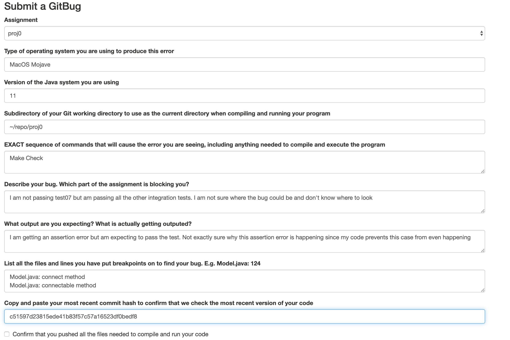
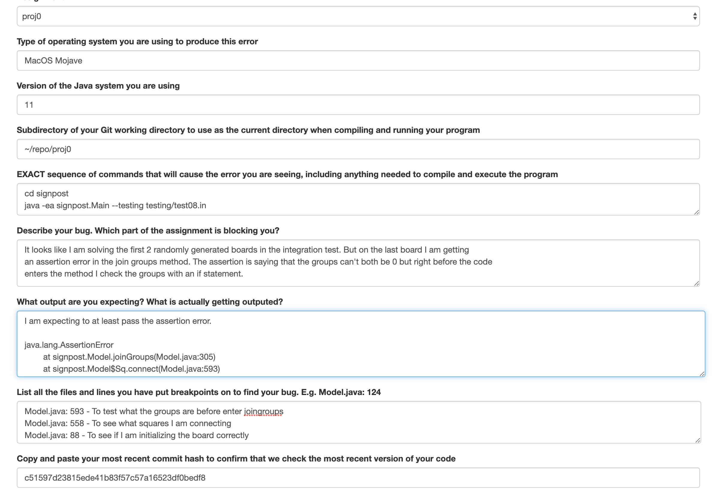

Navigation
A. Why Do We Need GitBugs?
Every now and then, you will run into a problem with an assignment that you can't figure out. If it is simply a matter of not understanding some aspect of Java or some quirk of our support software, you can ask a question on Piazza. But when it involves the code you have written for an assignment or project, Piazza is just not the way to go. First, you'll be posting information (such as your answers) that is intended to be kept to yourself. Second, Piazza just isn't cut out for posting large pieces of code in a form that others can easily understand. In addition, there is the question of just what constitutes a proper bug report. Here, for example, is a (redacted) Piazza post from a student:
"I'm trying to use HW0 for my java file and class name but it seems like I cannot compile (I know how to get to this point and I've passed tests using other names). I'm wondering why HW0.java with a class named HW0 did not work."
We can tell that the student had a compilation problem of some sort, but we can't tell from this many other important pieces of information:
- What precisely was in HW0.java.
- What command was used to compile it.
- From what directory that command was issued.
- What error message(s) resulted.
- Where HW0.java was relative to that directory.
In short, no rational person would ever expect anyone to be able to answer this question! In fact, the issues listed above are not exhaustive. One might also need to know:
- What version of Java was being used.
- The operating system being used.
- What the CLASSPATH was.
and so on.
Nor is this example the worst we've seen. There are many reports that amount simply to "Why does my program not work?" where we can't even tell what "doesn't work" means (Doesn't compile? Gets an exception when executed? Produces the wrong answer?). Sometimes, a student will attempt to be, in effect, too helpful. Typically, this involves posting a carefully trimmed snippet of code that they assume is the source of the problem, or giving a blow-by-blow account of various things tried in order to find or fix the problem. Again, we find in general that such attempts almost always manage to leave out the vital details that are actually needed to answer the question. Well, how should students decide between submitting a GitBug and going to office hours? Office hours are for conceptual help, for issues like:
- “Even after looking at the spec and examples, I don’t understand x about what this method is supposed to do.”
- “I know I want this function to do x but I’m not sure how to write it cleanly.”
- “Is there a better way to organize my code so that it’s more readable?”
GitBugs are for issues where students strictly just need debugging help:
- “I know this function is supposed to be doing x, y, and z, and I’m passing the unit tests for it. However, when trying to debug my integration tests, it seems like this function is still causing issues. I’m stuck, could I get some help?
B. What is a GitBug?
To make the process of bug reporting more productive, we've developed a procedure that (we hope) makes it easy to get us all the information we need to address your problems with labs, homeworks, and projects. GitBugs are a way for students to compactly deliver important information about their bugs to the course staff. After a student submits a GitBug, the staff will claim and read the student’s GitBug, view their code, and reply with pinpointed and precise suggestions on how to proceed.
Here are a couple of guidelines to follow when submitting a GitBug:
- You must commit and push all the files in the most recent version of your code to git if you want the staff to see the correct code.
- The staff will not reply with advice if we notice that you have not taken any steps to debug your code. Implementing a method and seeing that it does not work is not a sufficient reason to submit a GitBug.
- If you do not provide enough information about your bug, we will not be able to debug it. We try to make this easier for you by having you fill out a form, but we still get GitBugs that do not supply enough information.
- If you solve your bug before the staff has looked at it, mark your GitBug as resolved or delete it.
If a student does not follow the rules above, the staff reserves the right to reply to your bug as so:
- “Not enough information. Please resubmit your gitbug”
Your GitBug will then promptly be placed at the back of the queue.
C. How to Submit a GitBug
There are two ways to submit a GitBug: through the online portal, and through the instructional accounts.
Using the Online Portal
This semester we have created an online portal for students to submit a GitBug. The first time you visit the portal you will be redirected to a registration page where you will have to enter your three-letter login.
Please verify that your three-letter login is correct before submitting. If it is incorrect, the staff will not be able to pull and view your code and you will possibly be denying someone else the ability to submit a GitBug.
Once on the website, you will be able to submit a form with the following fields:
- Assignment: Specify which assignment is blocking you (e.g. HW1, Project 2, etc.).
- Type of Operating System: The operating system you are using (Windows10, MacOS Mojave, Linux, etc).
- Java Version: You can find this by running
java -- versionin your terminal or by navigating to File > Project Structure > Project > Project SDK in IntelliJ. If they are different, please send both. The complete filepath from which you are running your program: For example,
~/repo/proj0/testing.- If you are failing unit tests, please include which tests you are running and how you are running them.
- If you are failing integration tests, include the filepath from which you are running the integration tests and how you are running them.
- EXACT sequence of commands that will cause the error you are seeing, including anything needed to compile and execute the program: Please be as explicit as possible here. If we are unable to reproduce your error, then we will not be able to help you.
- Describe your bug. Which part of the assignment is blocking you?: Give us a high-level overview of what you think your bug is. Explain why you think your code should be working.
- What output are you expecting? What is actually getting outputted?: On the first line please enter what you think your code should be outputting. On another line, please copy and paste what your code is actually outputting. This information is vital for both you and the course staff in order for us to debug your code.
- List all the files and lines you have put breakpoints on to find your bug. E.g. Model.java: 124: Demonstrate how you have debugged your code. If we see that you are putting breakpoints in inconsequential positions, then we will reply with solid advice.
- Copy and paste your most recent commit hash to confirm that we check the most recent version of your code: Verify that you have commited the most recent version of your code to make sure that we pull the most recent version of your code.
- Confirm that you have pushed all the files needed to compile and run your code: If you do not do this, we cannot help you debug your code.
Using the Instructional Accounts
You can also submit GitBugs through your instructional account by using the git-bug python3 script available on the instructional machines. Complete the following steps to submit a GitBug:
- Create a file named error.txt in your repo. This file should contain all the same information as the online form. Use this template to fill out your error.txt file.
- Commit your code and error.txt, and then run
git push. - Log onto your instructional account.
From your instructional account, run the following commands:
git pull
git-bug ASSGN ERROR-FILEChoose from the following list to replace ASSGN:
- proj0
- proj1
- proj2
- proj3
- hw1
- hw2
- hw3
- hw4
- hw5
- hw6
- hw7
- hw8
- hw9
- lab4
- lab5
- lab6
- lab7
- lab8
- lab9
- lab10
Replace ERROR-FILE with the filepath to error.txt. It is okay if it exists outside of your project repository.
D. Examples of Bad and Good GitBugs
If you submit a bad GitBug, your GitBug will automatically get resolved and you will receive no help.
Example 1: Bad GitBug >:(

This is a bad GitBug. If you submit a GitBug like this, you will be asked to resubmit and include a better description. All we can gather from this GitBug is that the student is not passing the test07 integration test due to some unknown assertion error. We don’t even know what the assertion error is since it was not specified. It is also clear that minimal debugging efforts were due to the lack of explanation for their debugging efforts. It is not sufficient to only state which methods you placed breakpoints in (in this example, connect and connectable).
Example 2: Good Gitbug :D

This is a good GitBug. This particualr GitBug deals with a similar issue as the previous example, but it proves to us that the student actually tried debugging their code. The student provides a good description to prove to us that they understand what is happening in the integration test. They also describe their reasoning for each breakpoint they placed, further demonstrating their debugging efforts.